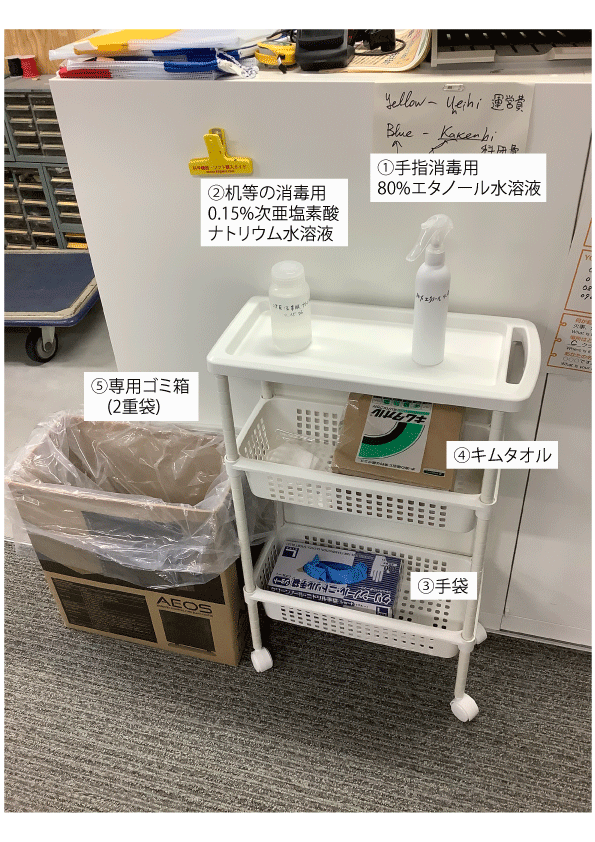

| |
入室時
在室中
- 常にマスクを着用し，室内での会話は必要最低限にとどめる．
- 研究室にある電話はファックスのみの使用とする．
- 会話や電話が必要な場合は，渡り廊下などの屋外に行って行う．会話は2メートル以上の間隔を空けて基本的に横向きで行う．
- 咳やくしゃみが出そうなときは，出来る限り室外に出る．
退室時
- 気道分泌液（唾，鼻水やその飛沫と考えてください）や体液が付着した可能性がある，机，椅子，機器 （キーボード，マウス及び，使用した場合は，共用プリンタ，スキャナ，ノートPCなど） を以下の1.の要領で消毒する．
- 「①80%エタノール水溶液」を用いて手指消毒した後に「③手袋」を着用し，「②次亜塩素酸ナトリウム溶液」を「④キムタオル」に含ませ，消毒する場所を一方向に拭く．※次亜塩素酸ナトリウムは直接手で触らないこと．
- 最後に部屋の内側ドアノブと外側ドアノブ（最後に退室する人は入口電気・エアコンスイッチも） を拭き，使用後のキムタオル，手袋を「⑤専用ゴミ箱」に捨てる．
- 退室する．

|